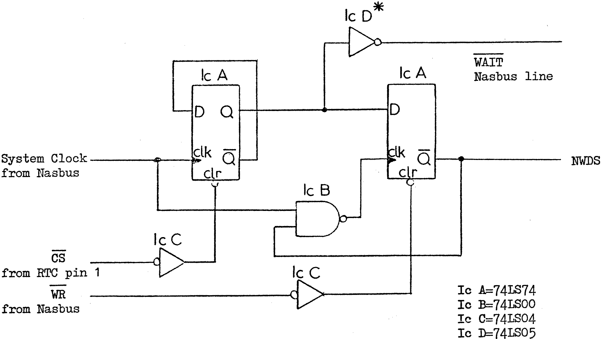

80-Bus News |
July–October 1982 · Volume 1 · Issue 3 |
| Page 4 of 51 |
|---|
I was interested in the article by J.R. Williams in Vol. 1 Iss. 1 using the National Real-Time Clock (RTC) chip. I have been perusing this device for similar reasons, and the following comments may be of interest.
The RTC requires a delay between chip select and the write pulse (NWDS) of at least 310nS., and a write pulse width of 430nS minimum. Although Mr. Williams’ design is working at 2 MHz on a Nascom 1, it may not always because it does not provide the chip select delay. This would be worse on a Nascom 2 at 4 MHz.
I am not yet in a position to try the circuit shown below but I hope that the idea behind the modification may assist someone. Basically, the circuit forces one extra WAIT state, and creates a new NWDS at a later time than the Z80 WR. (The Z80 hardware manual fig. 4.0-3 can be used to analyse the circuit timing.)
P.R. Verity, Addlestone, Surrey.
[Ed. – It looks like this is the year of the RTC! Not only is there the article in 80-BUS Iss. 1, plus the Gemini GM816 I/O board with RTC and Gemini GM822 PIO driven RTC, but now I hear that there are two or three other manufacturers about to launch their own versions of Real Time Clocks!!]
This replaces the direct connection between WK and NWDS in the original diagram.
Thank you for issue 1 of 80-BUS News which continues in the vein of INMC News and INMC80 News, maintaining the highest standards.
Firstly may I make 2 announcements to fellow readers:
1. York Micro computer Club now meets at:
Guppy’s Enterprise Club
17 Nunnery Lane, York.
Nascomers, Geminiers (?), 80-Bussers (?) most welcome.
| Page 4 of 51 |
|---|